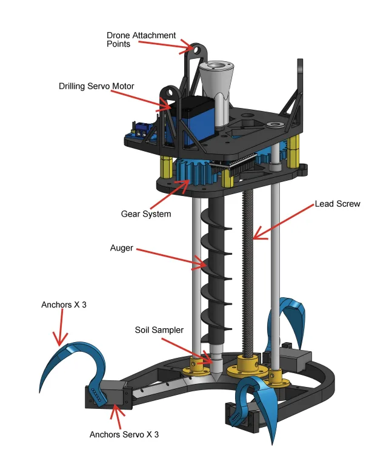

HydroFleet is a multi-drone system developed with a research team at the Massachusetts Institute of Technology (MIT). Each drone lowers a slung probe module into the field and drills a capacitive moisture sensor into the soil, and the fleet turns those readings into a soil moisture map for variable-rate irrigation. I designed, simulated and fabricated the Soil Probing Module, the payload that does the drilling.
Overview
HydroFleet won the Excellence in Drone Applications Award at the Farm Robotics Challenge. Variable-rate irrigation (VRI) driven by HydroFleet maps can raise crop yields by up to 15% and cut water and energy costs by 25% to 40%. A scientific paper on the system is in progress.
The technology is the subject of a utility patent application filed with the U.S. Patent and Trademark Office. My part was the Soil Probing Module (SPM), the electromechanical payload that lets a drone lower, anchor and drill a capacitive moisture probe more than 5 inches into the soil, taking a ground-truth measurement without landing.
Design
The main mechanical problem was generating enough linear force to penetrate compacted clay while staying inside a 600 g payload budget.
Single-motor drive for feed and rotation
Early prototypes used two motors, one for linear feed and one for rotation. I replaced them with a single 25 kg/cm continuous servo driving a 1:1:2 gear train, so the 3D-printed helical auger rotates in step with its descent along a fixed Tr8x8 trapezoidal lead screw. The auger thread then cuts into the soil at its own pitch rate, which lowers the torque needed to penetrate and saves motor weight.
Anchoring
Without anchoring, the drilling torque in compacted clay would spin the suspended module and the drone above it. Three coreless micro-servos (MEUS Racing, 8.5 kg/cm) at 120° around the base plate deploy curved, tapered claws into the soil, and static nails on the underside of the aluminium base plate stop the module from rotating.
Slip ring
The capacitive sensor body rotates with the auger, so its wires would twist and snap after a few cycles. A 6-wire slip ring on top of the rotating carriage carries the sensor signal to the stationary Arduino Nano.
Sensor circuit and CAN bus
The moisture sensor is the capacitive probe from a General Tools DSMM500, with its 300 g housing removed. I built a signal-conditioning circuit around an LMC555 CMOS timer in astable mode: the probe acts as the timing capacitor, so as volumetric water content rises the output pulse frequency shifts. That frequency is converted to an analog voltage read by the Arduino Nano.
Noise from the servos and the drone's brushless motors corrupted analog readings over the 2-metre slung cable, so the sampler talks to the flight companion PC over CAN bus: an MCP2515 transceiver shield on the Arduino Nano and a Waveshare USB-CAN-A converter on the PC.
Build
The finished module is built from pocketed aluminium plates on the lead screw, 3D-printed gears and carbon fibre tubes, and weighs 570 g as a payload.

Bill of materials
One HydroFleet unit costs $1,846.83 in materials: $455.11 for the sampler module and $1,391.72 for the flight platform.
| Item | Purpose / application | Unit cost |
|---|---|---|
| 1. Soil Probing Module (SPM) | ||
| DSMM500 Soil Moisture Probe | Soil dielectric / capacitance sensing | $221.64 |
| MEUS Racing 8.5 kg/cm Coreless Servos (×3) | Active anchoring claw deployment | $101.97 |
| Arducam 2MP Color Camera | Downward visual probing verification | $59.99 |
| TD-8825MG Digital 25 kg/cm Servo | Synchronized drive system actuation | $19.99 |
| 200 mm Tr8x8 Lead Screw & Nut | Linear carriage feed and translation | $8.19 |
| Arduino Nano ATmega328P | Onboard low-level microcontroller | $3.79 |
| HiLetgo Nano Terminal Board | Breakout and component wiring shield | $2.93 |
| MCP2515 CAN Bus Transceiver | Differential communication to the companion PC | $2.66 |
| HiLetgo XL4015 Buck Converter | Voltage step-down (14.8 V to 8.4 V) | $3.16 |
| HC-SR04 Ultrasonic Distance Sensor | Vertical carriage depth feedback | $1.99 |
| Miscellaneous hardware | Carbon fiber tubes, custom 3D-printed gears, fasteners | $28.79 |
| Soil Sampling Module total | Weight: 570 g payload | $455.11 |
| 2. UAV Flight Platform | ||
| Pixhawk 6X Flight Controller | Low-level flight stabilization & controls | $309.99 |
| DroneCAN F9P Rover RTK GPS | RTK GNSS positioning | $296.99 |
| Asus NUC Companion Computer | High-level ROS 2 offboard orchestration | $289.78 |
| Holybro X500 V2 Frame Kit | Quadcopter structural carbon fiber frame | $260.99 |
| FlySky RC Controller & Receiver | Manual overrides / emergency fallback | $64.99 |
| Arducam Global Shutter Camera | Downward visual human detection | $59.99 |
| Holybro Telemetry Radio (915 MHz) | Real-time data streaming to ground station | $58.99 |
| 4S 4000 mAh LiPo Battery Pack | Swarm flight system power source | $50.00 |
| UAV Flight Platform total | Thrust-to-weight ratio: 2.2:1 | $1,391.72 |
| Grand total per unit | Full system (BOM only) | $1,846.83 |
Testing
We tested the integrated system at Powisset Farm in Dover, MA, a 109-acre organic CSA vegetable farm.
- 97% insertion success rate across repeated trials in compacted clay soil; the anchoring claws kept the module from lifting or twisting.
- ±2 mm depth tracking, from lead-screw rotation counts combined with an ultrasonic distance reading between the upper and lower plates.
- R² = 0.947 between VWC readings from drone-inserted probes and hand-inserted controls, so vibration from the auger drive did not corrupt the capacitive measurement.
Results
- Excellence in Drone Applications Award at the Farm Robotics Challenge.
- Utility patent application filed jointly by MIT and Olin College in 2026.
- A scientific paper on the system is in progress.
Resources
Final technical report
The 41-page report we submitted: system architecture, mechatronics and the field evaluation.
Technical report (PDF)Utility patent application
"Systems, Devices, and Methods for Measuring Soil Parameters Using an Unmanned Aerial Vehicle" (docket MIT 27192J USPRO). Filed jointly by MIT and Olin College in 2026.
Under the USPTO 18-month confidentiality period, the application is not public until official publication.
Confidential holdWhat I learned
The design went through several changes between the first prototype and the field version, and each one came from something that failed in testing.
Slung-payload oscillation
Suspending the 570 g payload from a single point transferred its rotation to the drone in flight. A 3-point bridle of braided cord on a low-friction marine fishing swivel isolates payload rotation from the airframe.
Stepper motor weight
Early prototypes used two stepper motors for carriage feed and auger rotation. To hit the 600 g budget I replaced both with one continuous-rotation servo and a 3D-printed 1:1:2 gear train that drives both axes.
Anchoring force
Drilling into compacted clay pushed the sampler upward and lifted it off the ground. Passive spikes and 9 g servos were replaced with three 8.5 kg/cm coreless servos driving tapered claws that slide into the clay perpendicular to the auger's reaction force.
Electromagnetic noise
Switching noise from the ESCs and brushless motors corrupted the analog sensor lines. Moving the link to a CAN bus, with an MCP2515 controller on the sampler's Arduino Nano, sends differential signals over the 2-metre line instead.